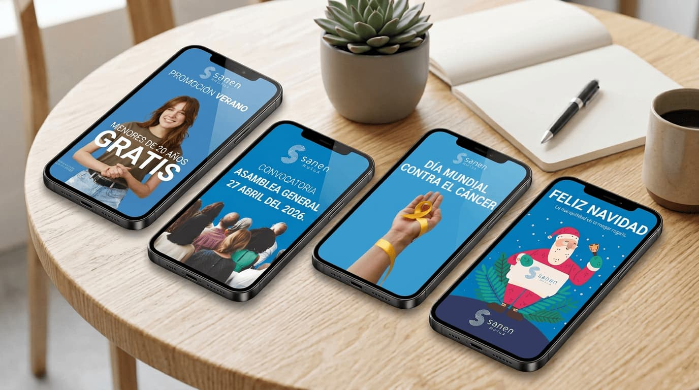

Social media
Sanen Mutua, Seguro de decesos
Para Sanen desarrollé desde cero la presencia visual de la marca en redes sociales, ya que la empresa todavía no contaba con un perfil de Instagram. El proyecto incluyó la creación de publicaciones, stories y portadas para las historias destacadas, definiendo una línea visual coherente con la identidad de la marca.
Además, diseñé y edité Reels y piezas audiovisuales adaptadas a Instagram y otras plataformas sociales, con el objetivo de crear contenido atractivo, mantener una comunicación visual consistente y facilitar la difusión de la marca en distintos canales digitales.
Contenido digital
Identidad visual
Diseño grafico


CLIENTE
SANEN MUTUA, SEGURO DE DECESOS
ROL
DISEÑO GRÁFICO Y DIGITAL
DISCIPLINA
SOCIAL MEDIA
HERRAMIENTAS
PHOTOSHOP
ILLUSTRATOR
PREMIER